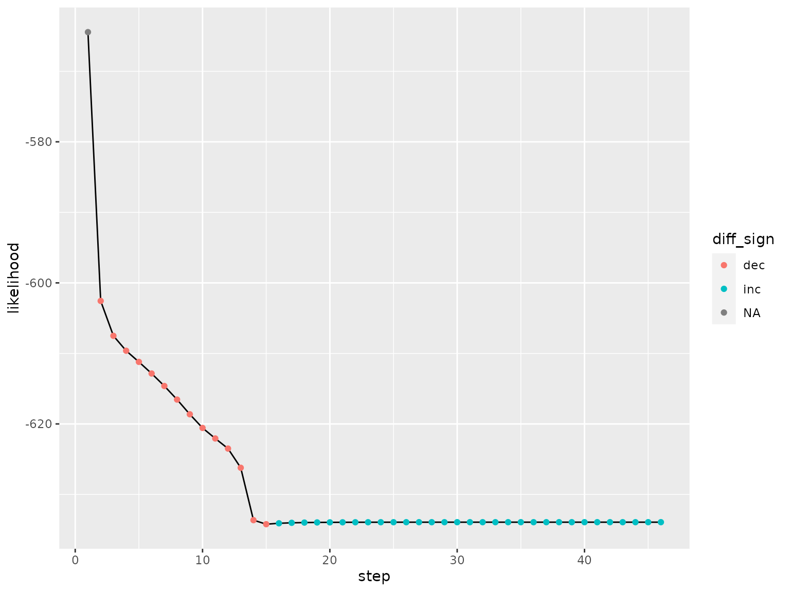
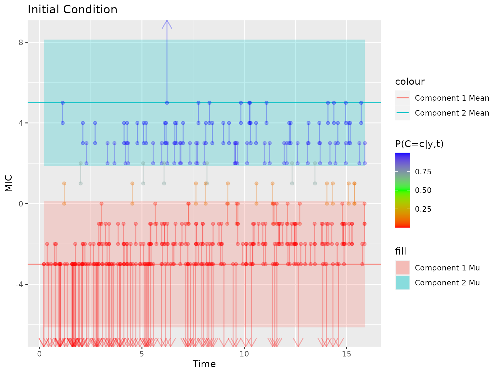
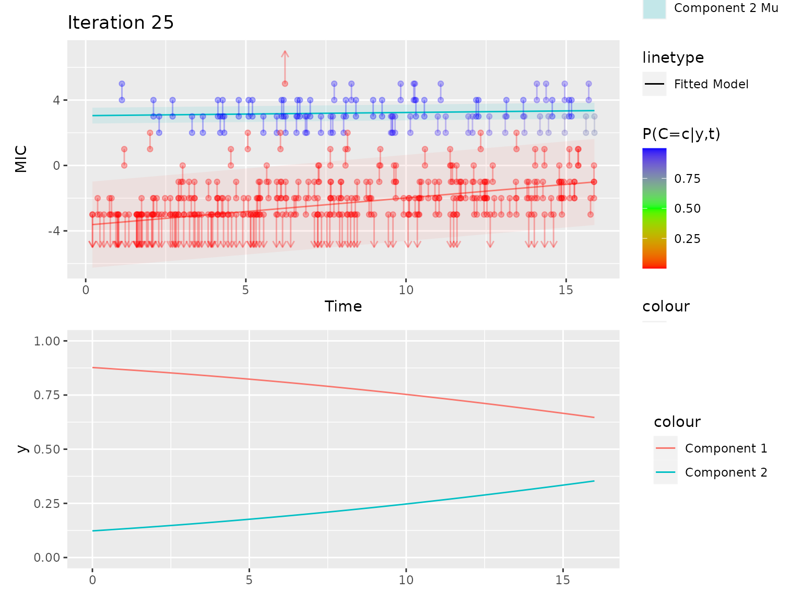

#> Loading required package: nlme
#> This is mgcv 1.9-0. For overview type 'help("mgcv-package")'.
#>
#> Attaching package: 'dplyr'
#> The following object is masked from 'package:nlme':
#>
#> collapse
#> The following objects are masked from 'package:stats':
#>
#> filter, lag
#> The following objects are masked from 'package:base':
#>
#> intersect, setdiff, setequal, unionThe data
Our data degenerating mechanism is a Gaussian mixture with two components, with nonlinear trends in the component means, fixed component standard deviations, and nonlinear trends trends in the component weights. The data is interval censored within the range of tested concentrations between tested concentrations (integer values), right censored above the upper bound (here 5), and left censored below the lower bound (here -3)
Model Fit
Our model uses an EM algorithm to estimate trends in mu for each
component and trends in the weights of components. We use the mgcv
package’s gam function to fit these, using the cnorm family for the mu
models and a binomial model with a logit link for the pi model. Then we
compute weights for each observation that we plug into the next model
fit in the next iteration. As a note, we do split the data by component
before fitting the mu models because of some issues we’d run into in
previous attempts to fit a stratified model that also contains splines
while still using the survival package for the mu models.
We’ll look more at the EM algorithm later, first I’d like to demonstrate
the current issue we are encountering
Here we try to fit the full model and run into the primary issue that
we’ve been having: the log likelihood decreases between steps of the EM
algorithm instead of increasing monotonically. In some other instances
(though not this one), we also get an error with some other data sets
that reads:
Fitting terminated with step failure - check results carefully Error in
gam.fit3(x = X, y = y, sp = L %*% lsp + lsp0, Eb = Eb, UrS = UrS
output = EM_algorithm_mgcv(example_data,
mu_formula = yi ~ s(t),
pi_formula = c == "2" ~ s(t),
max_it = 25,
ncomp = 2,
tol_ll = 1e-6,
browse_at_end = FALSE,
browse_each_step = FALSE,
plot_visuals = FALSE,
prior_step_plot = FALSE,
pause_on_likelihood_drop = FALSE,
pi_link = "logit",
verbose = 2,
model_coefficient_tolerance = 0.00001,
initial_weighting = 8)
#> starting iteration number 1
#> starting iteration number 2
#> Warning in EM_algorithm_mgcv(example_data, mu_formula = yi ~ s(t), pi_formula =
#> c == : Log Likelihood decreased
#> starting iteration number 3
#> Warning in EM_algorithm_mgcv(example_data, mu_formula = yi ~ s(t), pi_formula =
#> c == : Log Likelihood decreased
#> starting iteration number 4
#> Warning in EM_algorithm_mgcv(example_data, mu_formula = yi ~ s(t), pi_formula =
#> c == : Log Likelihood decreased
#> starting iteration number 5
#> Warning in EM_algorithm_mgcv(example_data, mu_formula = yi ~ s(t), pi_formula =
#> c == : Log Likelihood decreased
#> starting iteration number 6
#> Warning in EM_algorithm_mgcv(example_data, mu_formula = yi ~ s(t), pi_formula =
#> c == : Log Likelihood decreased
#> starting iteration number 7
#> Warning in EM_algorithm_mgcv(example_data, mu_formula = yi ~ s(t), pi_formula =
#> c == : Log Likelihood decreased
#> starting iteration number 8
#> Warning in EM_algorithm_mgcv(example_data, mu_formula = yi ~ s(t), pi_formula =
#> c == : Log Likelihood decreased
#> starting iteration number 9
#> Warning in EM_algorithm_mgcv(example_data, mu_formula = yi ~ s(t), pi_formula =
#> c == : Log Likelihood decreased
#> starting iteration number 10
#> Warning in EM_algorithm_mgcv(example_data, mu_formula = yi ~ s(t), pi_formula =
#> c == : Log Likelihood decreased
#> starting iteration number 11
#> Warning in EM_algorithm_mgcv(example_data, mu_formula = yi ~ s(t), pi_formula =
#> c == : Log Likelihood decreased
#> starting iteration number 12
#> Warning in EM_algorithm_mgcv(example_data, mu_formula = yi ~ s(t), pi_formula =
#> c == : Log Likelihood decreased
#> starting iteration number 13
#> Warning in EM_algorithm_mgcv(example_data, mu_formula = yi ~ s(t), pi_formula =
#> c == : Log Likelihood decreased
#> starting iteration number 14
#> Warning in EM_algorithm_mgcv(example_data, mu_formula = yi ~ s(t), pi_formula =
#> c == : Log Likelihood decreased
#> starting iteration number 15
#> Warning in EM_algorithm_mgcv(example_data, mu_formula = yi ~ s(t), pi_formula =
#> c == : Log Likelihood decreased
#> starting iteration number 16
#> Warning in EM_algorithm_mgcv(example_data, mu_formula = yi ~ s(t), pi_formula =
#> c == : Log Likelihood decreased
#> starting iteration number 17
#> Warning in EM_algorithm_mgcv(example_data, mu_formula = yi ~ s(t), pi_formula =
#> c == : Log Likelihood decreased
#> starting iteration number 18
#> starting iteration number 19
#> starting iteration number 20
#> starting iteration number 21
#> starting iteration number 22
#> starting iteration number 23
#> Warning in EM_algorithm_mgcv(example_data, mu_formula = yi ~ s(t), pi_formula =
#> c == : Log Likelihood decreased
#> starting iteration number 24
#> starting iteration number 25
#> Warning in newton(lsp = lsp, X = G$X, y = G$y, Eb = G$Eb, UrS = G$UrS, L = G$L,
#> : Fitting terminated with step failure - check results carefully
#> Warning in newton(lsp = lsp, X = G$X, y = G$y, Eb = G$Eb, UrS = G$UrS, L = G$L,
#> : Log Likelihood decreasedAnd we plot the log likelihood of each step, the EM algorithm should be monotonically increasing but we see drops early, then also some later.

So now I thought I’d remove the splines and see if the rest of the algorithm is working as intended. First, I’ll try to fit it all without any nonlinear trends in mu or pi
No Nonlinear Trends
I used survreg with a gaussian distribution and no splines for mu models and a glm for the logistic regression. Previously, using survreg with pspline for nonlinear trends in our EM algorithm also resulted in log likelihood decreases which is why we tried switching to mgcv
So the log likelihood increases monotonically here, that’s a good sign
And the plot looks good
Now let’s try to add them back in, starting with mu
Nonlinear trend in mu only
#> [1] 1
#> [1] 2
#> [1] 3
#> [1] 4
#> [1] 5
#> [1] 6
#> [1] 7
#> [1] 8
#> [1] 9
#> [1] 10
#> [1] 11
#> [1] 12
#> [1] 13
#> [1] 14
#> [1] 15
#> [1] 16
#> [1] 17
#> [1] 18
#> [1] 19
#> [1] 20
#> [1] 21
#> [1] 22
#> [1] 23
#> Warning in newton(lsp = lsp, X = G$X, y = G$y, Eb = G$Eb, UrS = G$UrS, L = G$L,
#> : Fitting terminated with step failure - check results carefully
#> [1] 24
#> Warning in newton(lsp = lsp, X = G$X, y = G$y, Eb = G$Eb, UrS = G$UrS, L = G$L,
#> : Fitting terminated with step failure - check results carefully
#> [1] 25
#> Warning in newton(lsp = lsp, X = G$X, y = G$y, Eb = G$Eb, UrS = G$UrS, L = G$L,
#> : Fitting terminated with step failure - check results carefullyNot what we’d like, now we got warnings reading: Fitting terminated with step failure - check results carefully And we definitely have decreases in likelihood through the 25 iterations
And the plot doesn’t look too good either, Component 2 should be the upper component and here it is lower than component 1
Next we’ll do nonlinear trends in pi only
No decreases in likelihood, that’s a good sign
And the plot looks good too. So our issue with the likelihood decreases likely lies with the mu models
How the EM algorithm works
Initial Weighting/First E step weights observations by their proximity to the upper and lower boundaries
initial_data = example_data %>% mutate(obs_id = row_number()) %>% select(obs_id, everything()) %>%
initial_weighting_fixed_regression_at_boundaries(., 2, 0.2)
plot_initial_weighting_regression(initial_data)
Then we run a for loop for the EM algorithm, starting with the first M step, where we separate our data by component and fit weighted GAMs with the cnorm family for the component means, E(Y|t,c) and a binomial GAM with a logit link for the component weights, P(C=c|t). Then in the next E step we use these models to calculate P(C=c|y,t), which we use as the observation weights in the next M step, and repeat.
max_it = 25
likelihood_documentation = matrix(data = NA, nrow = max_it, ncol = 5)
likelihood_documentation [,1] <- 1:max_it
possible_data = initial_data %>% mutate(
left_bound_mgcv =
case_when(
left_bound == -Inf ~ right_bound,
TRUE ~ left_bound
),
right_bound_mgcv =
case_when(
left_bound == -Inf ~ -Inf,
TRUE ~ right_bound
)
)
models = list()
for(i in 1:max_it){
print(i)
if(i != 1){
mu_models_old = mu_models_new
pi_model_old = pi_model_new
log_likelihood_old = log_likelihood_new
possible_data_old = possible_data
}
mu_model = function(possible_data, pred_comp){
df = possible_data %>% filter(c == pred_comp & `P(C=c|y,t)` > 0)
df$yi = cbind(df$left_bound_mgcv, df$right_bound_mgcv)
mgcv::gam(yi ~ s(t), family= mgcv::cnorm(link = "identity"), weights = `P(C=c|y,t)`, data=df, method = "ML") %>% return()
}
mu_models_new = purrr::map(1:2, ~mu_model(possible_data = possible_data, pred_comp = .x))
pi_model_new = mgcv::gam(c == "2" ~ s(t), family = binomial(link = "logit"), data = possible_data, weights = `P(C=c|y,t)`, method = "ML") %>% suppressWarnings()
possible_data %<>%
mutate(
`E[Y|t,c]` = case_when(c == "1" ~ predict(mu_models_new[[1]], newdata = possible_data),
c == "2" ~ predict(mu_models_new[[2]], newdata = possible_data),
TRUE ~ NaN),
`sd[Y|t,c]` = case_when(c == "1" ~ mu_models_new[[1]]$family$getTheta(TRUE),
c == "2" ~ mu_models_new[[2]]$family$getTheta(TRUE), #1,
TRUE ~ NaN),
`P(Y|t,c)` = case_when(
left_bound == right_bound ~ dnorm(x = left_bound, mean = `E[Y|t,c]`, sd = `sd[Y|t,c]`),
left_bound <= `E[Y|t,c]` ~ pnorm(right_bound, mean = `E[Y|t,c]`, sd = `sd[Y|t,c]`) -
pnorm(left_bound, mean = `E[Y|t,c]`, sd = `sd[Y|t,c]`),
TRUE ~ pnorm(left_bound, mean = `E[Y|t,c]`, sd = `sd[Y|t,c]`, lower.tail = FALSE) -
pnorm(right_bound, mean = `E[Y|t,c]`, sd = `sd[Y|t,c]`, lower.tail = FALSE)),
`P(C=c|t)` = case_when(
c == "2" ~ predict(pi_model_new, newdata = tibble(t = t), type = "response"),
c == "1" ~ 1 - predict(pi_model_new, newdata = tibble(t = t), type = "response")),
`P(c,y|t)` = `P(C=c|t)` * `P(Y|t,c)`
) %>%
mutate(.by = obs_id,
`P(Y=y|t)` = sum(`P(c,y|t)`)) %>%
mutate(
`P(C=c|y,t)` = `P(c,y|t)` / `P(Y=y|t)`)
log_likelihood_obs = possible_data %>%
summarise(.by = obs_id, likelihood_i = sum(`P(c,y|t)`)) %>%
mutate(log_likelihood_i = log(likelihood_i))
log_likelihood_new = sum(log_likelihood_obs$log_likelihood_i)
likelihood_documentation[i, 2] = log_likelihood_new
models[[i]] = list(mu = mu_models_new, pi = pi_model_new, data = possible_data)
}
#> [1] 1
#> [1] 2
#> [1] 3
#> [1] 4
#> [1] 5
#> [1] 6
#> [1] 7
#> [1] 8
#> [1] 9
#> [1] 10
#> [1] 11
#> [1] 12
#> [1] 13
#> [1] 14
#> [1] 15
#> [1] 16
#> [1] 17
#> [1] 18
#> [1] 19
#> [1] 20
#> [1] 21
#> [1] 22
#> [1] 23
#> [1] 24
#> [1] 25
#> Warning in newton(lsp = lsp, X = G$X, y = G$y, Eb = G$Eb, UrS = G$UrS, L = G$L,
#> : Fitting terminated with step failure - check results carefully
plot_likelihood(likelihood_documentation, format = "matrix")